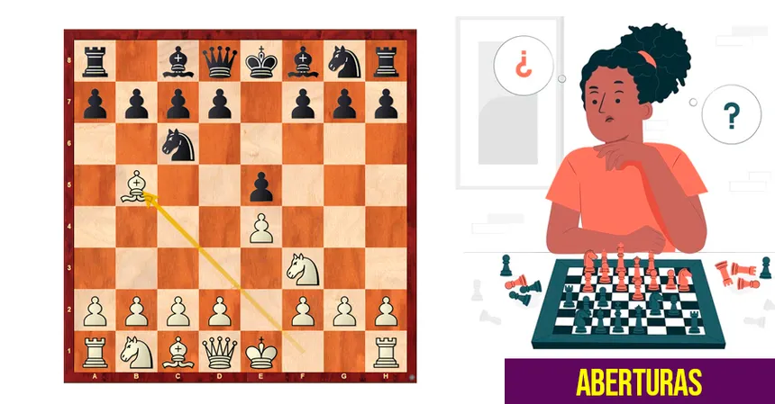

A abertura Espanhola, também conhecida como Ruy López, é uma das aberturas mais antigas e populares do xadrez. Ela começa com os movimentos 1. e4 e5 2. Cf3 Cc6 3. Bb5. Seu nome vem do sacerdote e enxadrista espanhol Ruy López de Segura, que estudou e registrou análises importantes sobre essa abertura no século XVI. A principal ideia da Abertura Espanhola é desenvolver rapidamente as peças e pressionar o cavalo de c6, que defende o peão de e5. As brancas procuram controlar o centro e criar oportunidades para obter uma pequena vantagem de desenvolvimento. As pretas, por sua vez, precisam encontrar maneiras de defender o peão e desenvolver suas peças de forma eficiente. A Abertura Espanhola possui muitas variações e pode resultar em partidas bastante estratégicas e complexas. Por causa de sua importância histórica e de sua presença frequente em partidas de grandes mestres, ela é considerada uma das principais aberturas do xadrez.